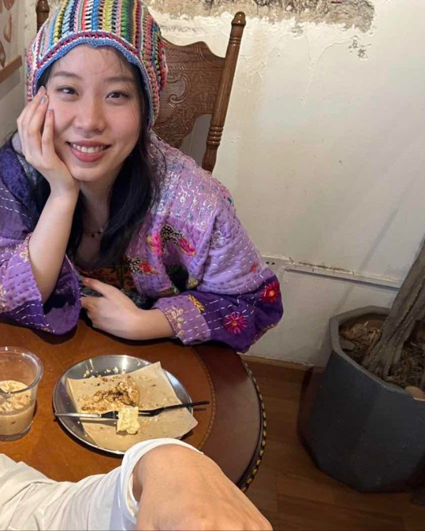

Skip to content
Tian Lab
Brain barriers & molecular imaging
Menu
☰
Research
Publications
People
Join
Collaborate
English
中文
Español
← Back to the team

Personal page
刘尚可
Doctoral student
Skin ageing
Affiliation
School of Medicine, Sichuan University · Burns and Plastic Surgery
Joined Tian Lab
2025.09
liushangke0424@foxmail.com